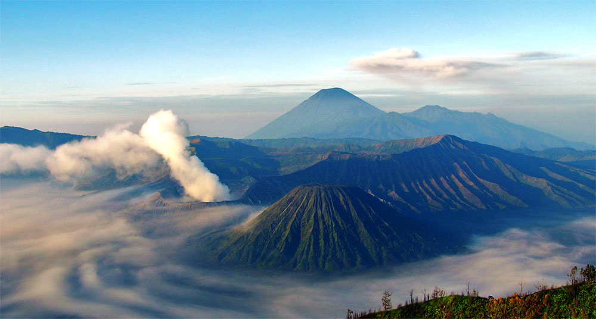
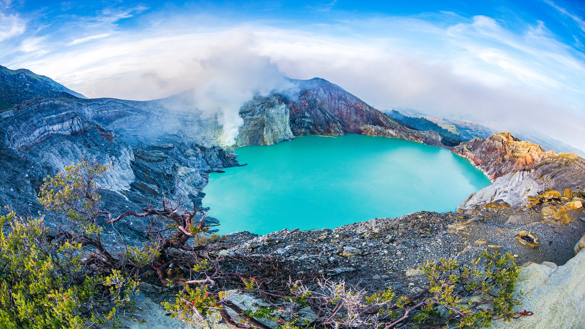

Gunung Bromo
Gunung Bromo merupakan salah satu wisata terkenal yang ada di Jawa Timur.

Kawah Ijen
Kawah Ijen merupakan salah satu wisata terkenal yang berada di Jawa Timur.

Air Terjun Coban Rondo
Air Terjun Coban Rondo merupakan salah satu tempat wisata terkenal yang berada di Jawa Timur.